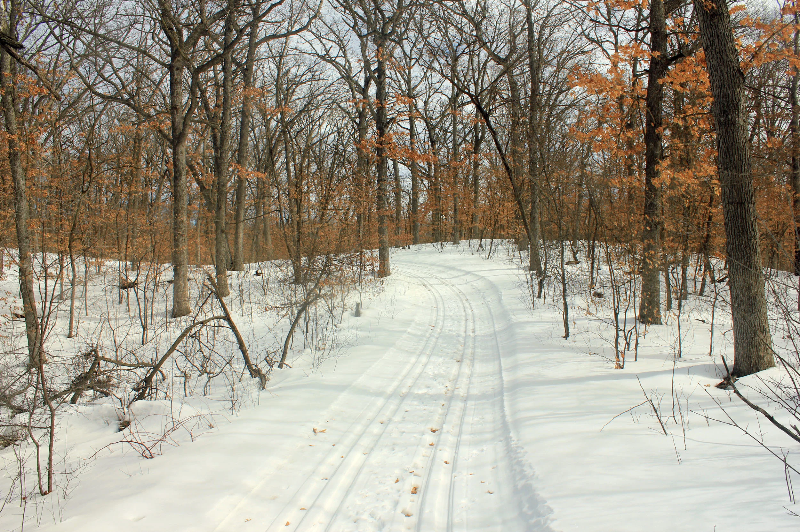
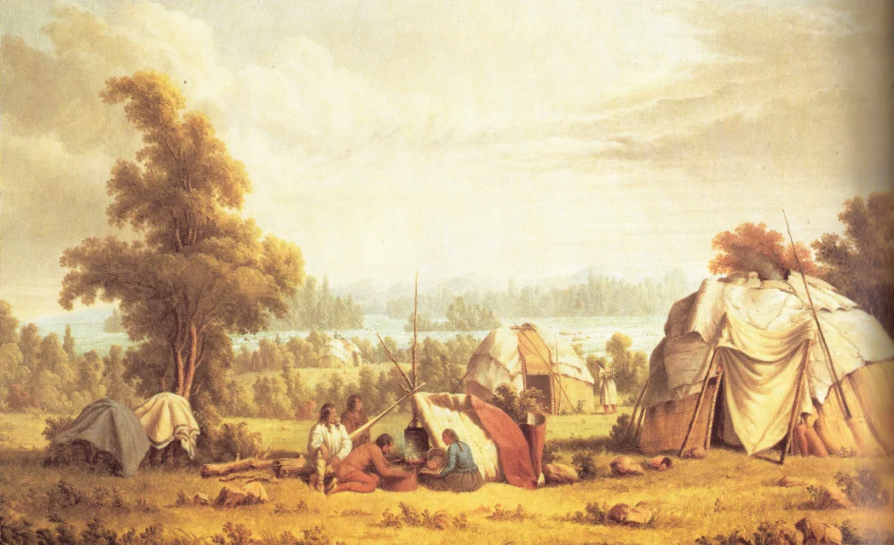
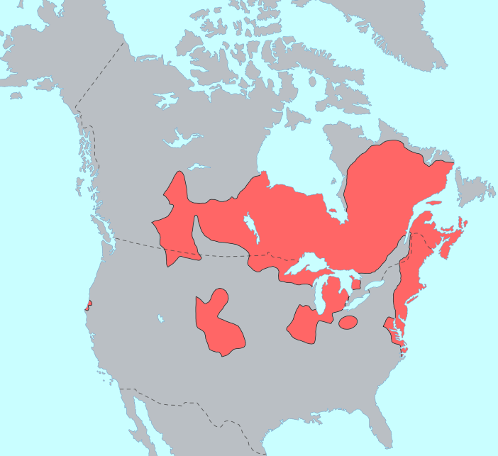
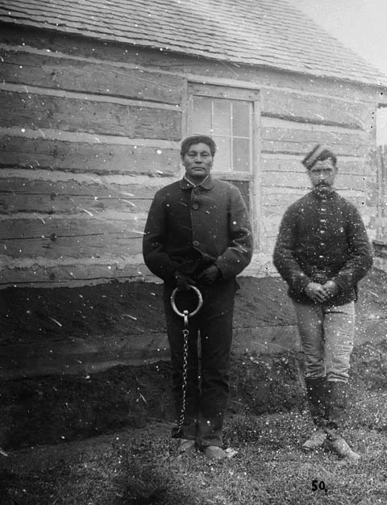
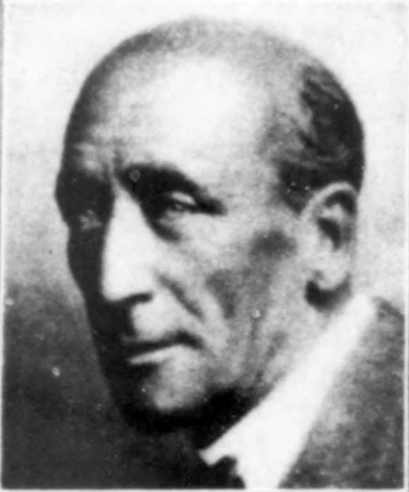

Wiindigoo / Wîhtikow.
Before the antlers, before the deer skull and before the horror movies, the Wendigo was a warning: hunger without end, greed without restraint and the person who takes until nothing remains.

The word “Wendigo” has been treated as a monster label that can be carried anywhere. The traditions behind it are more specific. They belong to living Indigenous communities whose languages, histories and teachings are related but not interchangeable.
There is no single canonical body, transformation rule or field-guide weakness. Some accounts emphasize a being. Others emphasize a human condition, corruption, possession or warning about taking beyond what the community and land can sustain.
Archive rule: name the language and community. Do not turn a teaching into a zoological checklist.
Related words. Distinct sources.
“Algonquian” names a language family. “Algonquin” names particular people and a language. Using them as synonyms erases the communities behind the record.
Wiindigoo
“A winter cannibal monster”The dictionary records the singular, plural, diminutive and related verb forms. Its speaker and region system matters: Ojibwe is a living language with regional variation, not a frozen folklore glossary.[01]
Open dictionary entryWîhtikow
Monster · cannibal · greedy personThe Plains Cree entry carries several related meanings, including a giant man-eating monster and a greedy person. That link between appetite and greed is source-specific evidence—not permission to flatten every tradition into one definition.[02]
Open dictionary entryWinter gave the hunger an edge.
When food, travel and survival narrowed, restraint and sharing were not abstract virtues. The figure marks the point where appetite breaks a person's obligations to other people and to the land.
Winter
Cold, isolation and scarcity create the physical conditions beneath many accounts. Winter is context—not proof of a creature habitat.
Hunger
The appetite cannot be satisfied. Consumption makes the need larger instead of ending it.
Greed
Taking more than one needs can be social cannibalism: the individual consuming what should sustain the whole community.
Transformation
Some accounts describe corruption, possession or a human becoming dangerous. No single mechanism applies across communities.
The story did not end in the old record.
Indigenous writers continue to use Wiindigoo to speak about colonization, historical trauma, cultural loss and survival.
“Colonization was our Wiindigo.”
Bezhigobinesikwe Elaine Fleming, an Ojibwe storyteller and educator, connects Wiindigoo with colonization and the continuing work of recovering land, language, names and culture. Her account shows why this cannot be filed away as a dead campfire legend.[03]
- Living Ojibwe interpretation
- Historical trauma and cultural destruction
- Survival and recovery—not monster hunting

Every recorder changed the file.
Missionaries, officials, anthropologists, psychiatrists and horror writers each brought a purpose and vocabulary of their own. The documents are real. They are not neutral.
Converted
Missionary texts filtered Indigenous accounts through Christian ideas about paganism, evil and conversion.
Criminalized
Community actions were judged inside a Canadian legal system extending authority into Indigenous territory.
Medicalized
Scattered cases and accusations were assembled into a supposed culture-bound syndrome.
Redesigned
The name became portable. Later media supplied a more marketable body: tall, skeletal, antlered and increasingly detached from its sources.
The crime is historical. The diagnosis is retrospective.
Swift Runner's 1879 case is routinely used as proof of “Wendigo psychosis.” That certainty arrived later and remains disputed.[05]

Do not turn a prisoner into a monster portrait.
During the winter of 1878–79, Swift Runner killed and cannibalized members of his family. He was arrested, convicted and executed. Later writers made the case a standard example of a psychiatric syndrome.
Louis Marano's 1982 review challenged the evidence behind that category. His argument was not that the crime never happened, but that outsiders had confused Indigenous accusation, explanation, social sanction and colonial reporting with one coherent clinical disorder.
- Historical crime: documented
- Retrospective diagnosis: contested
- Photograph: evidence of arrest, not supernatural proof
Two systems of law met in 1907.
Calling Jack and Joseph Fiddler “Wendigo hunters” turns a colonial legal collision into pulp adventure.[06]
Not a monster-hunting story.
Jack Fiddler—Zhauwuno-geezhigo-gaubow—was an Oji-Cree leader and healer. Canadian authorities arrested Jack and his brother Joseph over the death of a woman understood within their community as becoming Windigo.
Jack died by suicide in custody before trial. Joseph was convicted and sentenced to death. His sentence was commuted, but he died in prison.
The case belongs in the archive because it shows Canadian law being imposed where Indigenous law and responsibility had governed community life. It does not establish an unknown animal.
Open biographyA theory filed as a fact.
“Wendigo psychosis” belongs in the history of psychiatry—not on a clean list of accepted modern diagnoses.
Not a diagnosis for people in this file
The label did too much work.
Older anthropology and psychiatry treated fear of becoming a Wendigo, accusations of transformation, famine cannibalism and actual violence as parts of one culture-bound syndrome. Marano argued that the source record could not carry that conclusion.
The responsible label is narrower: a historical psychiatric theory, heavily disputed. The archive does not diagnose Swift Runner, the Fiddlers or Indigenous belief.
Document the theory. Document the critique. Do not repeat the diagnosis as settled medicine.
Blackwood carried the name into a new genre.
The 1910 novella is an influential horror adaptation by a non-Indigenous writer. It is not an ethnographic source.[07]

The wilderness-horror version travels.
Blackwood kept the northern setting and a terror of appetite, but wrote for an English-language horror audience. The name became easier to detach from specific people, languages and teachings.
That detachment matters. Once “Wendigo” became a general monster label, later writers could rebuild its rules and appearance while presenting each redesign as old folklore.
Read the public-domain novellaThe antlers are the clue.
The feature most audiences now recognize is the feature that best exposes modern redesign.
No fixed anatomy
Being · condition · warningDescriptions vary. Language sources center a winter cannibal monster, cannibalism and greed. They do not establish one standard deer-skull body.[08]
- Community-specific forms
- Human and social meanings
- No universal antlers
One marketable silhouette
Skull · antlers · towering bodyFilms, television, games and online art made deer imagery feel inevitable. Larry Fessenden's 2001 film was an important visual turn, but no single production should be credited with inventing every part of the modern form.[09]
- Instantly readable monster design
- Repeated across modern media
- Often mislabeled “traditional”
No creature rendering appears in this file by design. Using the modern antlered figure as the hero would repeat the misunderstanding the page is documenting.
Not an animal waiting to be discovered.
Wiindigoo and wîhtikow belong to living Indigenous languages and community traditions. Outsiders repeatedly translated the figure into their own systems: mission warning, criminal explanation, psychiatric syndrome and horror monster.
Cultural record active. Zoological classification rejected. Modern image transformed.
Language and Indigenous voices lead the file.
Colonial, psychiatric and popular-culture sources are included as evidence of how the record changed—not as replacements for community-specific knowledge.
- 01Ojibwe People's Dictionary · wiindigooOjibwe language entry: “a winter cannibal monster,” with grammatical forms and speaker/region context.Open ↗
- 02itwêwina Plains Cree Dictionary · wîhtikowPlains Cree meanings include a giant man-eating monster, cannibal and greedy person. Built with First Nations University and Maskwacîs partners.Open ↗
- 03Bezhigobinesikwe Elaine Fleming · The Ojibwe Who Slew the WiindigoOjibwe-authored account connecting Wiindigoo with colonization, historical trauma and cultural survival.Open ↗
- 04The Canadian Encyclopedia · WindigoSecondary overview of names, recurring themes and variations across several Indigenous traditions.Open ↗
- 05Louis C. Marano · Windigo Psychosis: The Anatomy of an Emic-Etic Confusion1982 critique arguing that the classic psychiatric syndrome was not supported by reliable evidence.Open ↗
- 06Dictionary of Canadian Biography · Zhauwuno-geezhigo-gaubowBiographical source for Jack Fiddler, his leadership and the 1907 colonial legal case.Open ↗
- 07Algernon Blackwood · The WendigoPublic-domain 1910 literary adaptation. Important to horror history; not an Indigenous source.Open ↗
- 08Brady DeSanti · The Cannibal Talking HeadAcademic comparison of popular-culture portrayals and Ojibwe Windigo traditions.Open ↗
- 09Glass Eye Pix · Wendigo (2001)Official production page for Larry Fessenden's influential modern horror film.Open ↗
Minnesota winter trail
Yinan Chen, Lake Maria State Park, 2013. Public-domain dedication via Wikimedia Commons. Resized, converted and toned. Atmospheric geography—not a claimed encounter site.
Algic-language distribution map
Ish ishwar, 2005, CC BY 2.0, via Wikimedia Commons. Redrawn and modified from maps by Roberta Bloom; converted to WebP. No further changes.
Ojibwa village at Sault Ste. Marie
Paul Kane, scene dated 1846, painting before 1871. Public-domain artwork and faithful reproduction via Wikimedia Commons. Colonial-era representation; converted and toned.
Swift Runner after arrest
George M. Dawson / Library and Archives Canada, PA-051141, 1879. Public domain in Canada and the United States via Wikimedia Commons. Converted and toned; no horror treatment.
Algernon Blackwood portrait
Robert Beebe, McClure's Magazine, 1927. Public domain in the United States via Wikimedia Commons. Converted to WebP.
Research cutoff · 22 Aug 2026No AI imagery · no antlered creature art · community-specific claims preserved